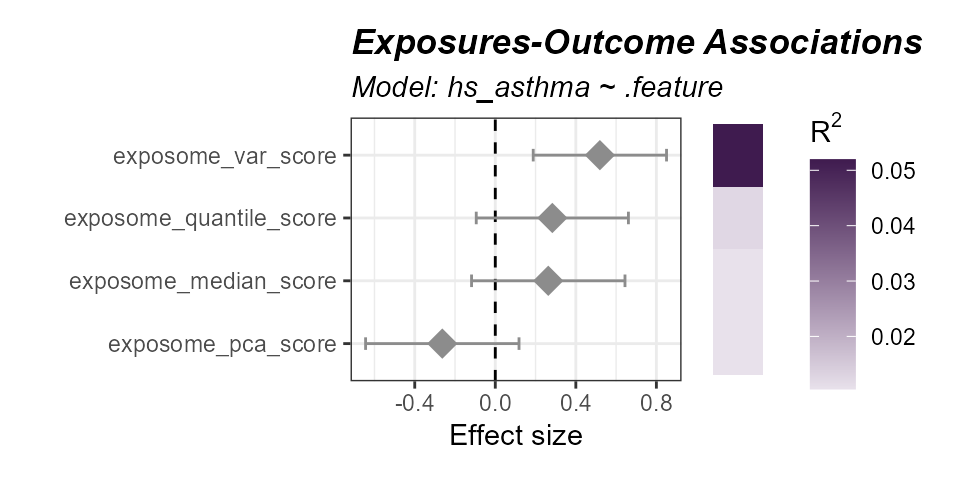

- Summarize multiple exposures into a single exposome score.
- Test exposome scores against an outcome and vizualize.
Prerequisites
We covered exposure preprocessing in a previous vignette. Here is the quick start code from that vignette to get you going:
Click to expand code
# Load Libraries
library(tidyverse)
library(tidyexposomics)
# Load example data
data("tidyexposomics_example")
# Create exposomic set object
expom <- create_exposomicset(
codebook = tidyexposomics_example$annotated_cb,
exposure = tidyexposomics_example$meta
)
# Grab exposure variables
exp_vars <- tidyexposomics_example$annotated_cb |>
filter(category %in% c(
"aerosol",
"main group molecular entity",
"polyatomic entity"
)) |>
pull(variable) |>
as.character()
# Impute missing values
expom <- run_impute_missing(
exposomicset = expom,
exposure_impute_method = "missforest",
exposure_cols = exp_vars
)
# Check variable normality
expom <- run_normality_check(
exposomicset = expom,
action = "add"
)
# Transform variables
expom <- transform_exposure(
exposomicset = expom,
transform_method = "boxcox_best",
exposure_cols = exp_vars
)Exposome Scores
We can calculate exposome scores, which are a summary measure of
exposure. The run_exposome_score function is used to
calculate the exposome score. The exposure_cols argument is
used to set the columns to use for the exposome score. The
score_type argument is used to set the type of score to
calculate. Here we could use:
median: Calculates the median of the exposure variables.mean: Calculates the mean of the exposure variables.sum: Calculates the sum of the exposure variables.pca: Calculates the first principal component of the exposure variables.irt: Uses Item Response Theory to calculate the exposome score.quantile: Calculates the quantile of the exposure variables.var: Calculates the variance of the exposure variables.
The score_column_name argument is used to set the name
of the column to store the exposome score in. Here we will define a
score for aerosols using a variety of different methods and demonstrate
their use in association with asthma status.
# determine which aerosol variables to use
aerosols <- c("h_pm25_ratio_preg_None", "h_pm10_ratio_preg_None")
# Create exposome scores
expom <- expom |>
run_exposome_score(
exposure_cols = aerosols,
score_type = "median",
score_column_name = "exposome_median_score"
) |>
run_exposome_score(
exposure_cols = aerosols,
score_type = "pca",
score_column_name = "exposome_pca_score"
) |>
run_exposome_score(
exposure_cols = aerosols,
score_type = "quantile",
score_column_name = "exposome_quantile_score"
) |>
run_exposome_score(
exposure_cols = aerosols,
score_type = "var",
score_column_name = "exposome_var_score"
)We can then associate these exposome scores with asthma status using
the run_association function, just like we did before.
However, this time we specify our feature_set to be the
exposome scores we just calculated.
# Associate exposome scores with outcome
expom <- run_association(
exposomicset = expom,
formula = hs_asthma ~ .feature,
source = "exposures",
feature_set = c(
"exposome_median_score",
"exposome_pca_score",
"exposome_quantile_score",
"exposome_var_score"
),
action = "add",
family = "binomial"
)
# Plot the association forest plot
plot_association(
exposomicset = expom,
source = "exposures",
terms = c(
"exposome_median_score",
"exposome_pca_score",
"exposome_quantile_score",
"exposome_var_score"
),
filter_col = "p.value",
filter_thresh = 0.05,
r2_col = "r2"
)
Associations of aerosol exposome scores with asthma status. The variance-based score has the strongest association with asthma status.